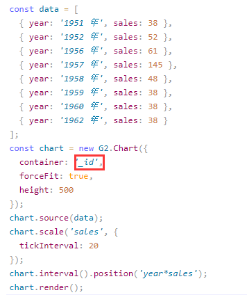
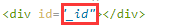
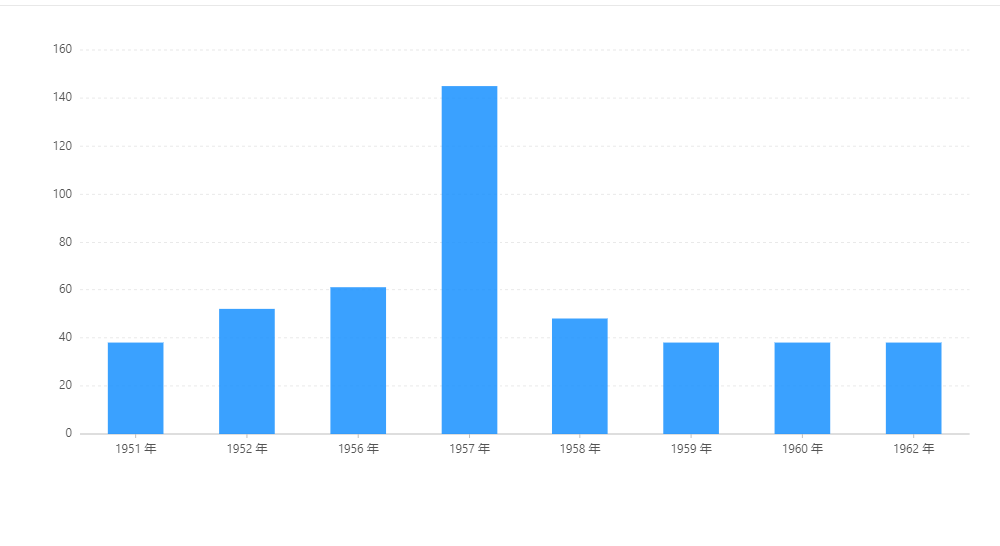

3.4. react中使用antv¶
目录
3.4.1. 安装插件¶
1.首先将antv安装至本地项目中
npm install @antv/g2 --save
2.安装完成之后在jsx文件头部添加
import G2 from '@antv/g2'; 用来引入所要使用到的图表插件
G2 是一套基于图形语法理论的可视化底层引擎，以数据驱动，具有高度的易用性和扩展性。用户无需关注各种繁琐的实现细节，一条语句即可构建出各种各样的可交互的统计图表。深入了解可以去查看antv官网 https://antv.vision/zh
3.配置图表的数据


红框圈起来的表示必须一致，否则会提示 Please specify the container for the chart!
效果图：
